| 日付 | 2013年1月26日（土） |
|---|---|
| 山域 | 房総 |
| メンバー | 家族（妻、長女・1歳） |
| 山行形態 | 子連れ日帰り |
| アクセス | 車 |
| ルート (Map) | 道の駅ちくら (10:16) - (11:05) 鳥居 - (11:12) 高塚山 (11:51) - (12:16) 合有戸溜池 - (13:06) お花畑 (13:22) - (13:35) 道の駅ちくら |
房総半島の南端近くに高塚山という小さな山がある。
強い冬型の寒い一日に、温暖な気候を求めて高塚山を目指す。
道の駅ちくらの駐車場に車を停める。標高0m。
海岸近くにある比較的大きな道の駅だ。
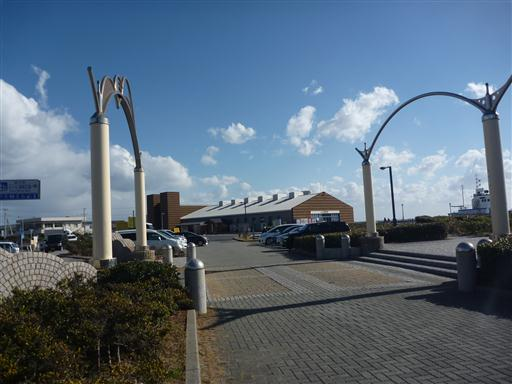
すぐ側には太平洋が広がる。今日は風が強いため波が立っている。
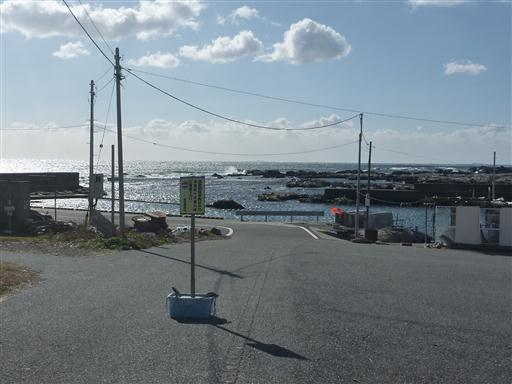
陸側には低い山並が見える。目指す高塚山の山頂部はこの山並の奥で、ここからは見えない。
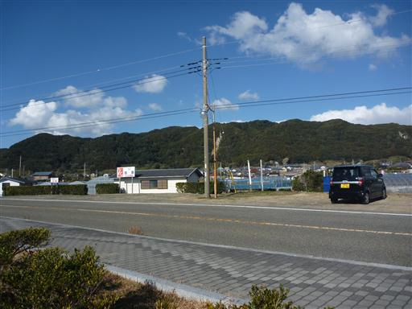
目の前に見える山を目指して細い道を歩いていく。
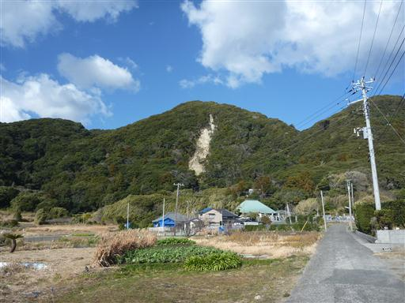
道端にはスイセンの花が咲いている。房総半島はスイセンの栽培が盛んな地域だ。
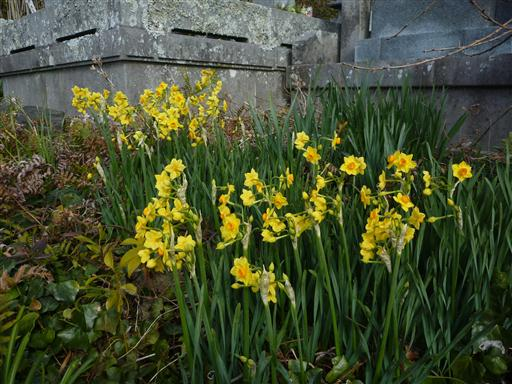
少し高台に登ると海がよく見渡せる。
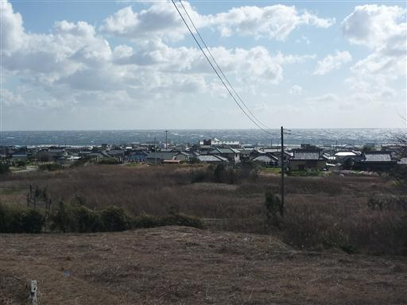
登山道に入っていく。道は思いの外整備されている。
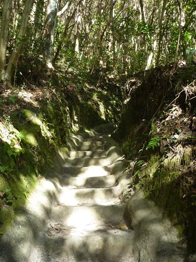
この辺りは温暖な気候のため、照葉樹林が広がっている。
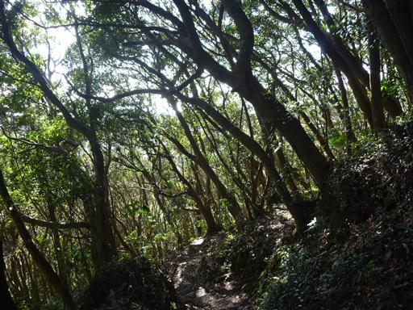
山の中腹に古びた鳥居が立っている。
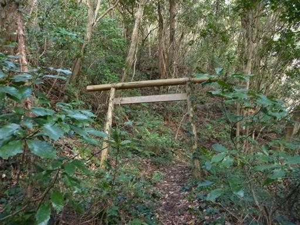
斜面を埋め尽くす木また木。木の密度がすごい。
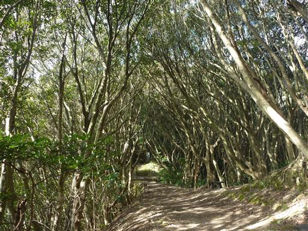
今度は立派な鳥居が現れる。
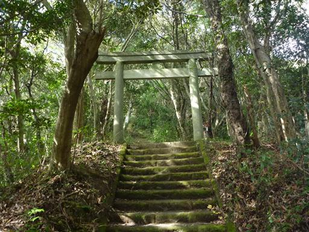
鳥居の先は古い階段が続く。苔に覆われているので滑りそうで少し怖い。
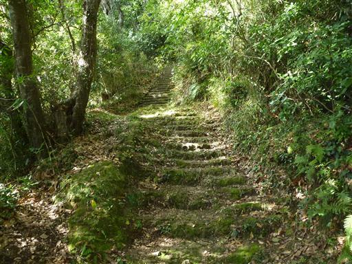
高塚山の山頂に到着。標高216m。
山頂には高塚不動尊の奥ノ院が祀られている。
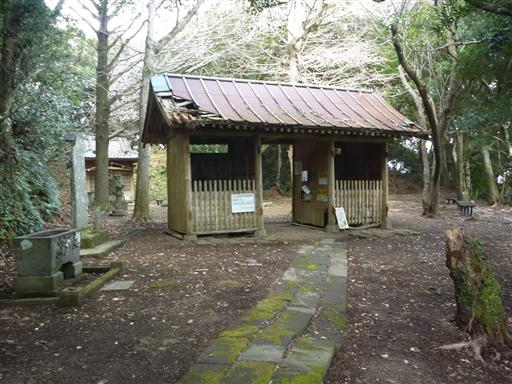
門にいるのは風神と雷神。こちらは風神。
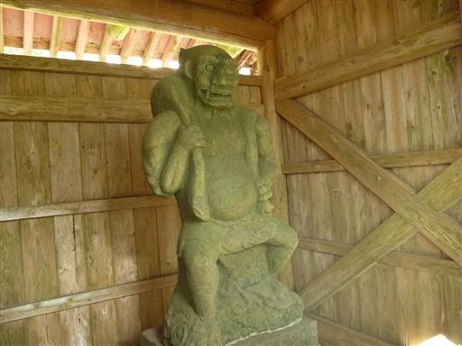
こちらは雷神だ。
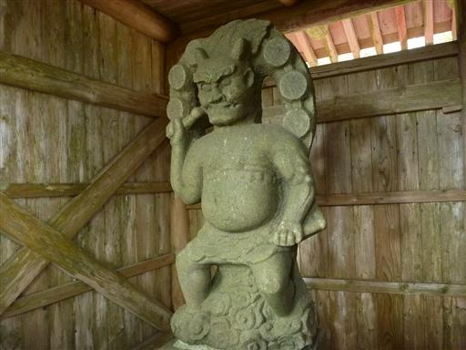
山頂は広い。よく整備されているため、参拝に訪れる人はそこそこいるようだ。
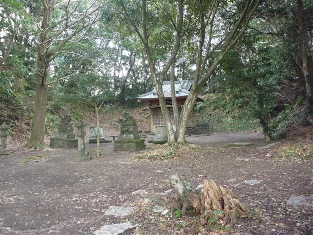
山頂は木に覆われているが、一角は樹林の切れ目があって真っ青な太平洋が望める。
今日は快晴予報だったのだが、結構雲が出ている。
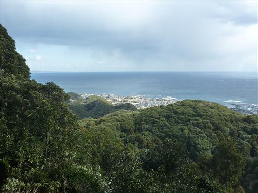
下山は少し足をのばして、合有戸溜池を経由する。この辺りの樹林帯も美しい。
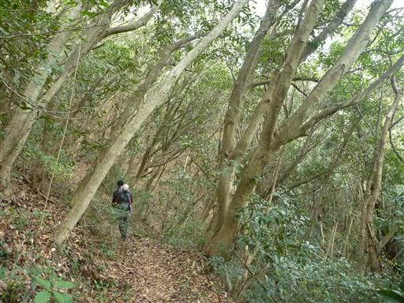
足元にはドングリが無数に落ちている。これほどドングリだらけの登山道は初めてだ。
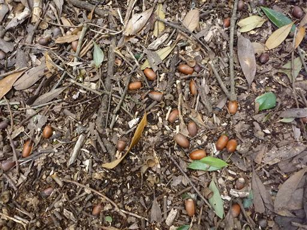
枝が折れたため、小さなドングリが枝に付いたままになっている。
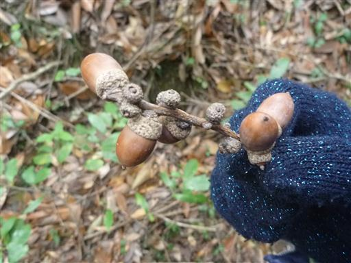
合有戸溜池に到着。ここまで車道が通じている。
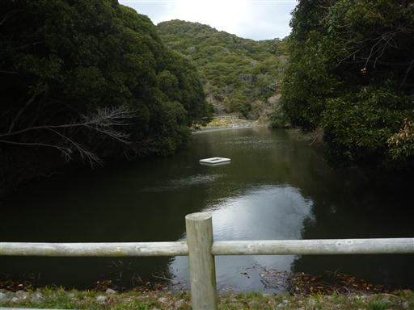
しばらく進むと道が行き止まりになってしまう。
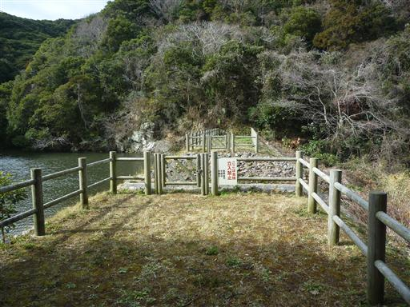
池から流れ出る水路に沿って踏み跡が続いているが、かなりの悪路だ。
滑って転んでも嫌なので大人しく引き返すことにする。
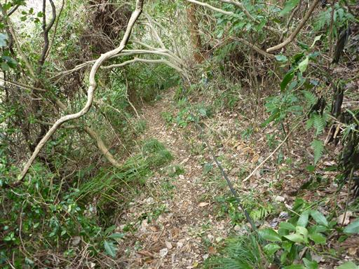
急傾斜の車道を下って下山する。
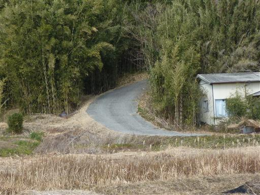
この辺りは温暖な気候を利用して、冬は花の栽培がおこなわれている。
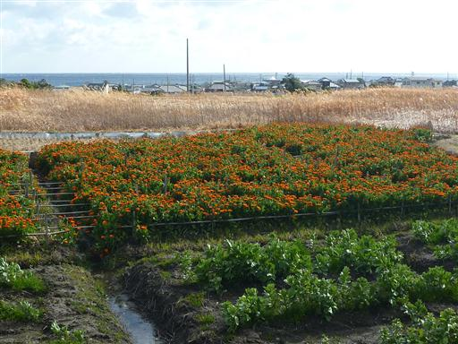
細い道を歩いて駐車場を目指す。
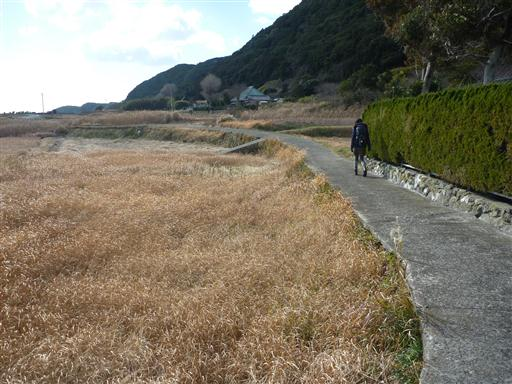
高皇産霊神社に寄り道することにする。
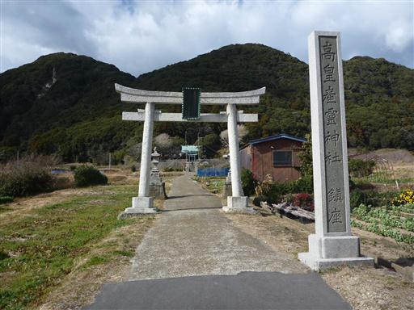
少し高台に建っている立派な神社だ。神社からは海を見渡すことができる。
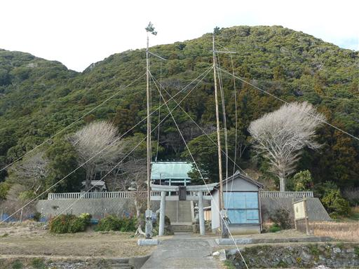
すごい根っこの木だ。

最後にお花畑に寄って花摘みをすることにする。
好きな花を7本摘んで300円と比較的リーズナブルだ。
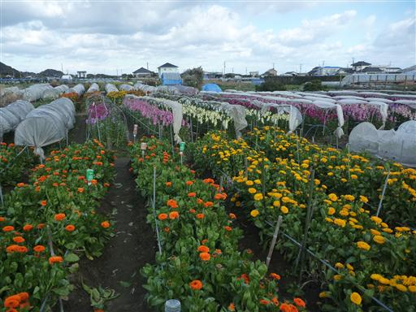
子供は花をもらってご満悦。しかし花を握ったため、摘んだ花の先っぽが折れてしまった…
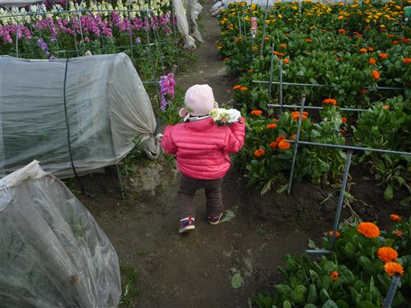
駐車場に戻った後、道の駅にある船に乗ってみることにする。
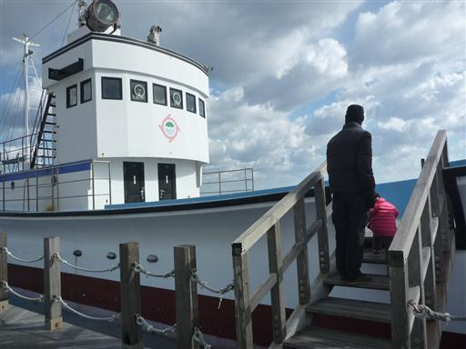
眺めは良いのだが風が強くて寒すぎるため早々に退散。
ここで土産にトビウオの開きを買う。味は悪くないが臭いが少々強かった。
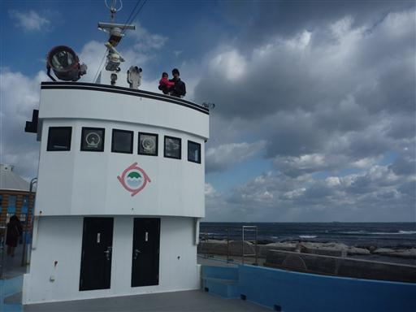
せっかく千葉まで来たので、帰りに木更津アウトレットに寄って帰る。
買物をしていると上空が黒い雲に覆われ、なんと雪が降ってくる。
遠くの方は晴れているようで、夕日に照らされて辺りは真っ赤に染まっている。不思議な天気だ。
山歩き自体は短かったが、あちこちで色々と寄り道ができて充実した一日だった。
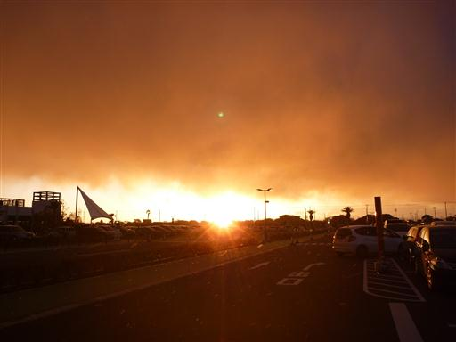